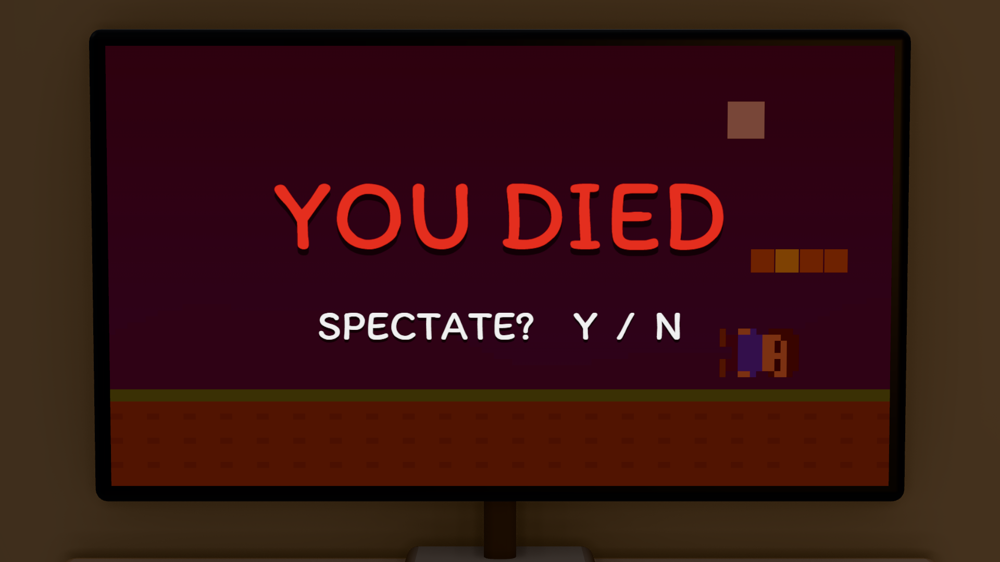
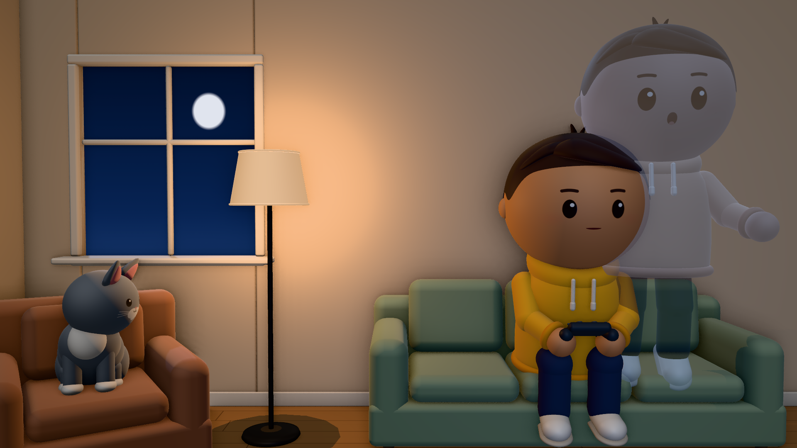
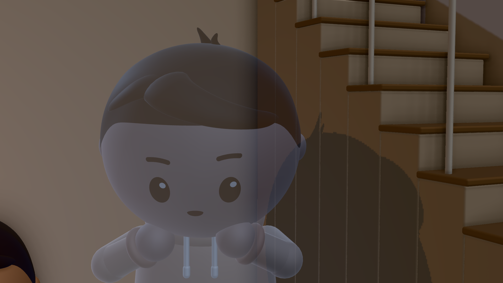
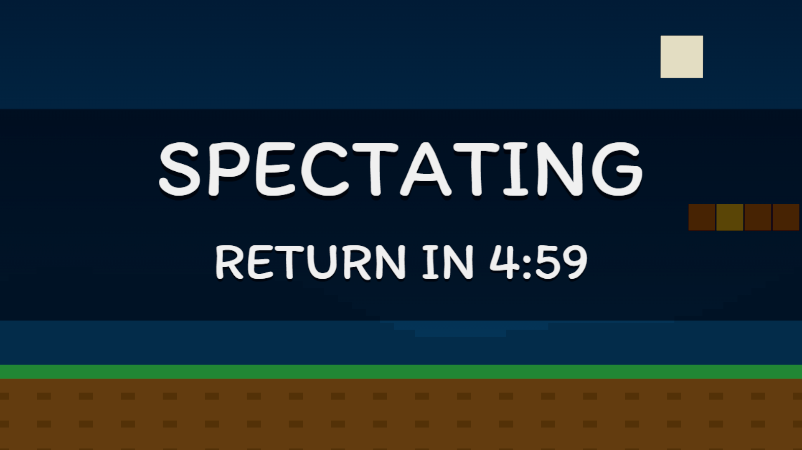
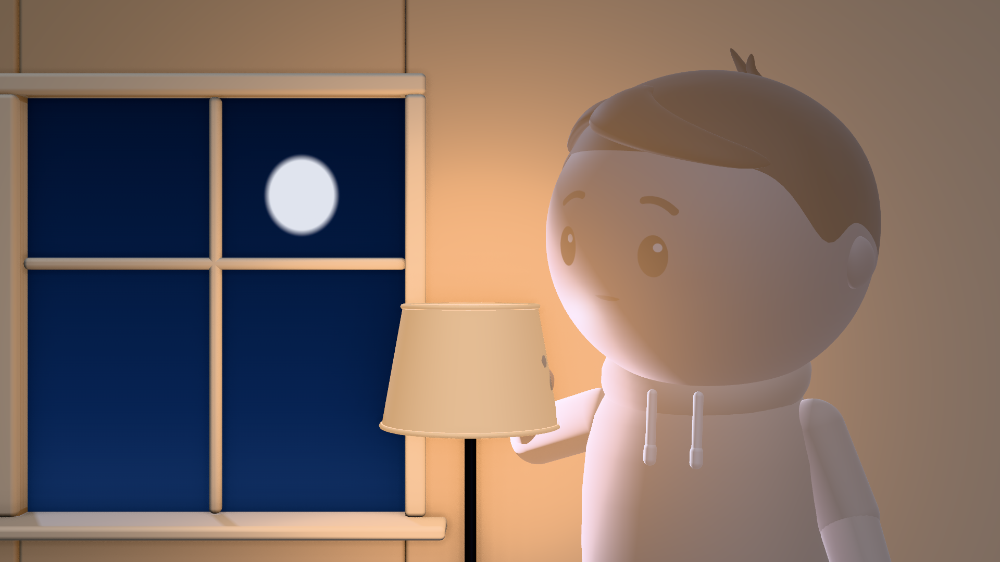
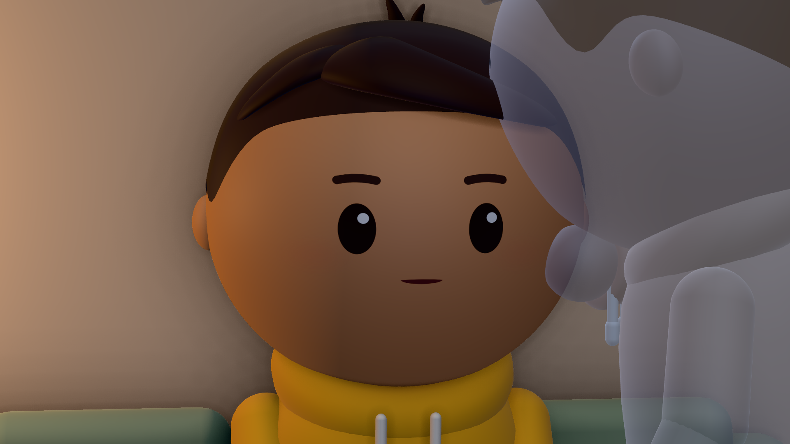
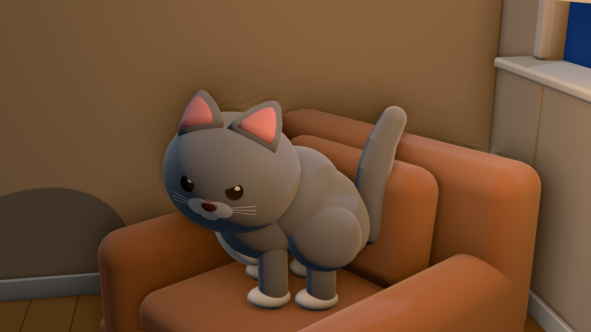
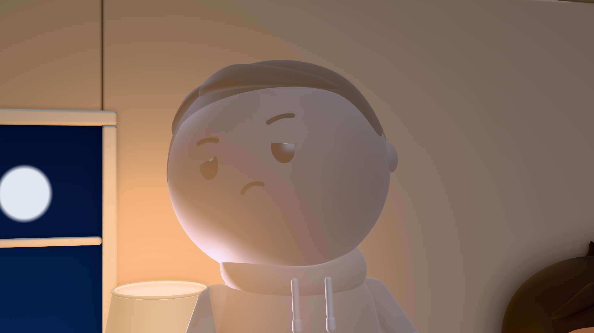
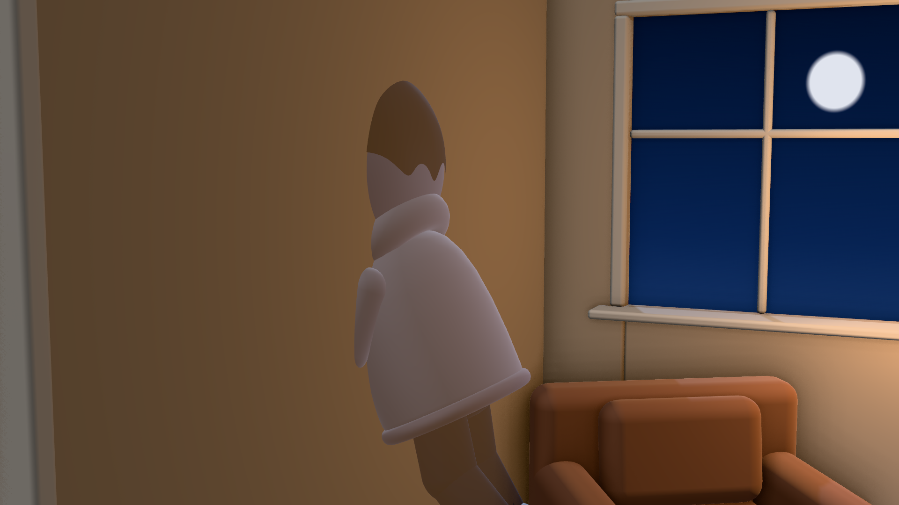

Close on the TV in the lamp-lit room: "YOU DIED" slams in, then "SPECTATE? Y / N". A button click and we cut.
Sound: game death sting; button click at 1.0s

Wide: Kip frozen on the couch with the controller, the cat on her armchair, the lamp on. His ghost lifts out of his body with one quick comic stretch and rises half a metre, see-through. The thumbnail moment.
Sound: a soft "fwoomp" and shimmer; a held string chord

His ghost turns his see-through hands over and looks down at himself.
Kip (k01): "...Uh. Hello?"
Sound: the chord thins out

The TV flips to SPECTATING, RETURN IN 5:00, and ticks down to 4:58.
Sound: a game beep on the flip, a soft tick each second

By the lamp his hand slides straight through the shade.
Kip (k02): "Okay. Okay, okay, okay."
Sound: a faint shimmer as the hand passes

Close on his frozen face: his ghost hand sinks into his own cheek.
Kip (k03): "Ew."
Sound: a hiss off screen at the end

From his eyes: the cat's head tracks him, her pupils widen, her back arches and she hisses.
Kip (k04): "You can see me?"
Sound: cat hiss (bank), cut on it

Kip, offended, side-eyes the cat. A held beat, then he turns to the wall.
Kip (k05): "Rude."
Sound: silence under the hold

He leans headfirst into the kitchen wall; the camera pushes through the 10 cm wall with him and comes out in the kitchen.
Sound: whoosh on the push